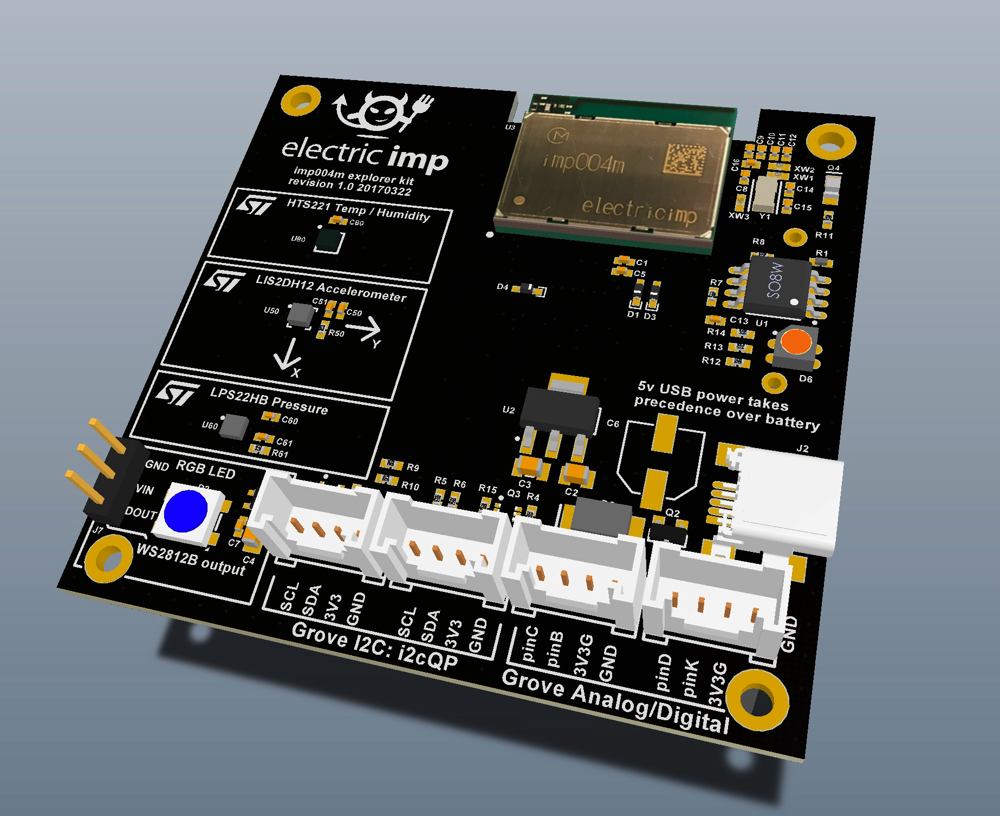
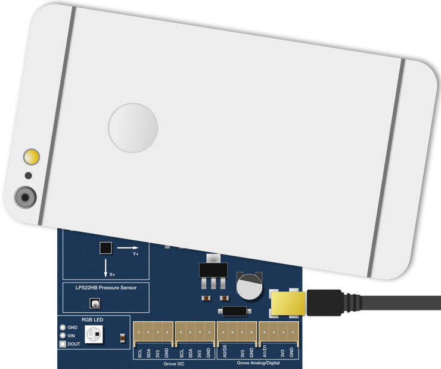

Getting Started Guide のこのパートでは、あなたの impExplorer のインターネット接続設定手順について見ていきます。ここから先に進むためには impExplorer と Electric Imp アカウントが必要です。もしアカウントを作成していなければ、今すぐ行ってください。アカウントの作成手順についてはガイドのここを参照してください。
imp 対応開発デバイスの設定にはお使いの LAN への接続とあなたのアカウントへの紐付けが必要です。 Electric Imp の BlinkUpテクノロジーを使うことで両方の作業が同時に完了します。
もし今まで BlinkUp を使ったことがなければ、下記のビデオで、光を用いた独自の設定技術について確認することができます。ビデオでは異なるハードウェアを設定していますが、基本原理は impExplorer でも全く同じです。
BlinkUp がどう動作するか見た後は、早速あなたの impExplorer をオンラインにしましょう。
※注 本ガイドは開発デバイスのみに適用されます。商用の imp 対応製品には専用の設定アプリがあり、その製造メーカーのガイドラインに従う必要があります。
お持ちの Developer Kit を Electric Imp の無料アプリで設定します。お持ちの携帯デバイスに合わせ iTunes App Store か Google Play のいずれかからアプリをダウンロードしてください。
アプリをダウンロードしたら、早速起動してユーザネームとパスワードでサインインしてください。
Electric Imp アプリがお持ちの impExplorer の設定手順を案内します。まず、あなたのアカウントにログイン済みである必要があります— まだであればユーザネームとパスワードを入力し ‘Sign In’ をタップしてください。 次に、‘Configure a Device’ をタップしてWiFi ネットワークの詳細を入力します。Network Name (SSID) 欄は、お持ちのスマートフォンが接続しているネットワーク名に設定されているかもしれません。
ヒント パスワード欄にある目の形をしたアイコンをタップすると、入力した文字列を見ることができます。
impExplorer 日本版に搭載されている imp004m WiFi 通信モジュールは 2.4GHz 802.11n 規格を使用します。また旧規格である 2.4GHz 802.11b/g ネットワークとも互換性があります。もしあなたの 802.11n ネットワークが 5GHz バンドをお使いの場合は imp004m は接続することができません。もしあなたのスマートフォンが 5GHz ネットワークに接続していた場合、そのネットワークがアプリ画面に表示されるかもしれません。 この場合はネットワークを 2.4GHz で稼働させるか、ルーターが複数のネットワークをホスト出来る場合には別のゲストネットワークを作成することを検討してください。
ネットワーク要件の詳細についてはこちら（英語）をご覧ください。
impExplorer Kit 搭載の imp004m モジュールは WEP, WPA, WPA2 のセキュリティ規格を WiFi ネットワークが使っているかを判別します。あなたが必要なのは WiFi パスワードを入力することだけです。もしセキュリティのかかっていないネットワークに接続する場合には、パスワード欄を空欄にしてください。
imp は Enterprise レベルの WiFi 認証をサポートしていません。これは、カスタム SSID 、パスワードと一緒にユーザネームでのログインを要求するためです。もしそのような環境で開発デバイスを設定する場合には、他のコンシューマグレードのネットワークに接続して、ネットワーク名だけを入力するよう設定することもできます。
ヒント ネットワーク設定を将来のために保存することもできます。これを呼び出すには、Network Name 欄の横にある三角形（▼）をタップして、保存済みネットワークの一覧を表示してください。 そして、使いたいネットワーク名をタップしてください。
アプリ画面の ‘Next’ を押します。次の画面では impExplorer を mini USB ケーブルに接続します (USB AC アダプタか、コンピュータのUSBポートに接続します)。impExplorer Kit（日本版）では右側中央にステータス LED があり、購入直後は橙色に点滅し、一度使っていれば赤色に点滅します。

再び ‘Next’ を押し、‘Send BlinkUp’ ボタンをタップします。速やかにスマートフォンの画面を下に向け、impExplorer の表面に対し平行にかざします。この作業を行うまでに、画面上で3秒間のカウントダウンが行われます:

BlinkUp は光を使いデータを送信するため、逆に特殊な照明条件、特に直射日光のようなとても明るい照明に影響されます。最も良い条件を得るために、下記のようにすることをおすすめします。
BlinkUp をするときは、画面を常にあなたとは反対向きにして、設定対象となるデバイスのみに光を向けるようにしてください。特に（光過敏性発作など）ストロボの光の影響を受けやすい医学的症状がある場合、画面を直接見ないでください。iOS アプリでは（マナーモード以外では）開始前と終わりに音が鳴るため、その間目をつぶっておくことも出来ます。また BlinkUp 完了後はバイブレーションが作動し振動します。
impExplorer は BlinkUp で受け取ったデータを使ってオンライン接続し、Electric Imp の impCloud にコンタクトします。その進行状況は impExplorer Kit の LED で表示されます。まず緑色に3秒間点灯し BlinkUp の成功を伝えます。 次に赤色と橙色が交互に点滅し、 impExplorer が接続中であることを示します。プロセスがうまく進んだら、LED は ゆっくりとした緑色の点滅となり、 接続し利用可能なことを示します。
impExplorer がオンラインになる進行状況は Electric Imp アプリにも表示されます。設定操作に成功したら、アプリはデバイス固有の IDコード（これは Electric Imp IDE — プラットフォームの開発／デバイス管理コンソール上でリスト表示する際の初期値となります）を表示します。更にアプリはこのデバイスに対応するクラウドのエージェント URL も表示します。エージェントについてはこのガイドの後のセクションでより詳しく学びますが、現時点での次のステップは impExplorer を IDE 上で表示することです。これについては次のセクションで解説します。
LED が緑色に早く点滅し、その後緑色が点灯したままになることがあります。 これは impOS のアップデートが進行中であることを示します。もしこのプロセスを中断してしまっても気にしないでください。impOS はアップデートが何らかの理由で失敗しても文鎮化（Brick）しないスマートアップグレードプロセスを採用しています。imp004m は普通に起動しつづけ、次回の電源投入時にアップデートを再ダウンロードします。アップデートがインストールされた後、デバイスは再起動します ー LED が赤色に点滅し、次に橙色に、最後に接続したら緑色に点滅します。
もし LED が緑色に点滅しない場合、デバイス接続に問題が発生していることを示しています。この場合、下記 トラブルシューティングをチェックしてください。
ヒント 接続していても未接続でも、一定時間が経過すると電源を節約するため LED が消灯します。これは通常動作であり、デバイスは稼働しています。もし impExplorer を再設定したい場合には電源のオフ／オンを行ってください。LED が点灯している間、impExplorer は BlinkUp に対応可能です。
impExplorer Kit がインターネット接続に成功したことを LED が示すのと同様、接続がうまくいかなかったことも LED が示します。例えば、LED が赤く早く点滅した場合、デバイスが BlinkUp 電文を受け取れなかったことを示します — スマートフォンの画面を離し過ぎたためかもしれません。
この事象が起こった場合は、再度 BlinkUp を試してください。LED を注視し、問題発生箇所を示す、色とその点滅のパターンを見つけてください。ここに imp の LED カラーコード一覧（英語）があります。これで問題の原因を追跡し、接続の手助けとなる更なるアドバイスを得ることができます。また BlinkUp 動作確認済みのモバイルデバイスの一覧 （英語）もあります。
次のセクション に進むか 最初のセクションに戻る